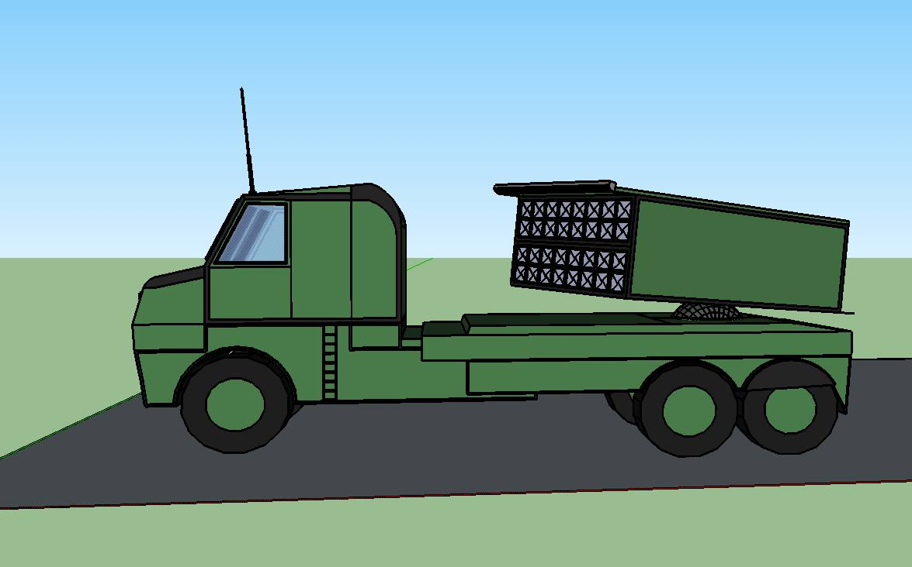

מאגר הנשיא
⬆ דברים של גיא פרדיס
פורימון 2022 מנגנון
Film 1.mp4
⬇ בסיס מתקן לעילם.skp
0.5 MB
⬇ בסיס מתקן.skp
0.8 MB
⬇ בסיסי מתקן סופי.skp
0.1 MB
⬇ דגשים מנגנון.docx
0.0 MB
⬇ הספקים עבור ימי עבודה ה-מנגנון.xlsx
0.1 MB
⬇ חבילות.docx
0.0 MB
⬇ חבלים ואלבד - כמויות.xlsx
0.1 MB
⬇ חלונות לעילם.skp
0.1 MB
⬇ חפה הנדסי ראשוני.skp
0.9 MB
⬇ יד לאגסה.skp
0.1 MB
⬇ משגר סופי.skp
0.1 MB
⬇ עבור אחראי חבילות.docx
0.3 MB
⬇ פרופיל של עין חפה.skp
0.7 MB
⬇ פריסה עבור דגם מהנדס.skp
0.4 MB
⬇ פריסת בסיסי מתקן סופית - לפני מהנדס.skp
0.5 MB
⬇ פשמאיקר2.skp
0.6 MB
⬇ ציוד של חפה.xlsx
0.1 MB
⬇ ציף ציף מניאק.skp
0.7 MB
⬇ שגר בסיסי.skp
0.0 MB
